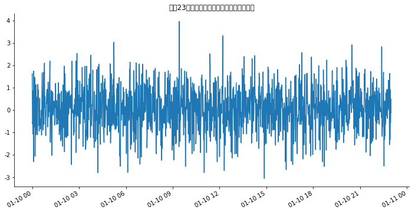
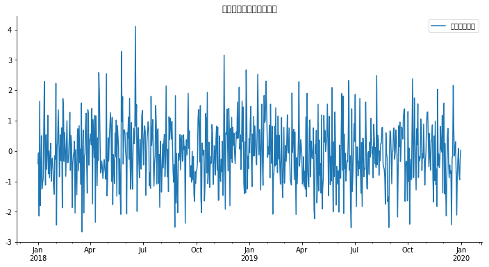

时间序列是金融量化分析中最常见的数据类型，记录某一变量或特征沿着时间轴而取值，比如某只股票2008-2018年日收盘价。量化分析的一个重要环节之一是基于历史数据进行分析和挖掘，试图 从历史的维度探究某一事物的变化规律或发展趋势（做预测）。目前，时间序列分析理论已经相对成熟，包括一般统计分析（如平稳性、自相关、谱分析等）、统计建模和推断、时间序列预测（包括流行的机器学习、深度学习，如LSTM模型）和滤波控制等。在使用Python分析时间序列时，经常会碰到时间日期格式处理和转换问题，尤其在可视化分析和分时期统计方面。本文作为时间序列分析的入门指引之一，将着重介绍如何利用Python处理日期和分时期统计分析，希望能起到抛砖引玉的作用。
先引入数据分析和画图常用库，pandas、numpy、matplotlib以及中文乱码处理，画图也可以使用pyecharts、seaborn、bokeh等
1 | import pandas as pd |
datetime处理日期
python常用的处理时间的库有：datetime,time,calendar。datetime库包括了date（储存日期：(年、月、日),time(储存时间：(小时、分、秒和微秒)，datetime同时包含了data和time，timedelta代表两个datetime之间的差（天、秒、微秒）。
1 | from datetime import datetime |
当前时间：2019-02-23 17:59:53.432863
2019年2月23日
1 | now.strftime('%Y-%m-%d') |
'2019-02-23'
1 | delta=datetime(2019,1,10)-datetime(2019,1,1,12,30) |
datetime.timedelta(days=8, seconds=41400)
1 | from datetime import timedelta |
datetime.datetime(2018, 2, 20, 0, 0)
字符串和时间的转化
1 | #比如想要知道列表里两个时间字符串之间相差多少天 |
datetime.timedelta(days=9)
1 | #将datetime格式转换为常见的年（Y）月（m）日（d）格式表示 |
['2018-12-20', '2018-12-11']
datetime.strptime只能根据设定的时间格式来处理指定的字符串，如果列表里(list)包含不止一种格式的字符串，如datestr=[‘12/20/2018’,’12/11/2018’,’2018-10-18’],使用datetime.strptime就很难处理了。遇到这种情况可以引入第三方时间处理包dateutil，可以处理任意格式字符串。
1 | from dateutil.parser import parse |
datetime格式：
[datetime.datetime(2018, 12, 20, 0, 0), datetime.datetime(2018, 2, 10, 0, 0), datetime.datetime(2019, 1, 10, 0, 0)]
"月/日/年"格式：
['12/20/2018', '02/10/2018', '01/10/2019']
"年月日"格式：
['20181220', '20180210', '20190110']
"年-月-日格式"：
['2018-12-20', '2018-02-10', '2019-01-10']
"年（后两位）-月-日"格式：
['18-12-20', '18-02-10', '19-01-10']
使用NumPy库处理日期
numpy库主要用于数组操作（线性代数分析），但在处理日期和时间数据上功能也很强大，其时间格式是datetime64
1 | #将字符串转换成numpy格式时间 |
numpy.datetime64('2019-01-10')
1 | #转化为字符串 |
'2019-01-10'
1 | np.datetime64('1901') |
numpy.datetime64('1901')
1 | #转化为datetime格式 |
datetime.date(2019, 1, 10)
1 | #生成时间序列 |
array(['2019-01-05', '2019-01-06', '2019-01-07', '2019-01-08',
'2019-01-09'], dtype='datetime64[D]')
1 | #以月为间隔，生成2018年12个月 |
array(['2018-01', '2018-02', '2018-03', '2018-04', '2018-05', '2018-06',
'2018-07', '2018-08', '2018-09', '2018-10', '2018-11', '2018-12'],
dtype='datetime64[M]')
1 | #以年为间隔 |
array(['2015', '2016', '2017', '2018'], dtype='datetime64[Y]')
1 | #以周为间隔 |
array(['2018-11-29', '2018-12-06', '2018-12-13'], dtype='datetime64[W]')
1 | #设定随机种子（括号里的数字只是起标记作用） |
/Users/lianjy/anaconda3/lib/python3.7/site-packages/matplotlib/font_manager.py:1331: UserWarning: findfont: Font family ['sans-serif'] not found. Falling back to DejaVu Sans
(prop.get_family(), self.defaultFamily[fontext]))

上面的报错问题是因为我的mac字体问题，无法正确解决，先放弃，无伤大雅
Pandas库处理日期
Pandas库是处理时间序列的利器，pandas有着强大的日期数据处理功能，可以按日期筛选数据、按日期显示数据、按日期统计数据。pandas的实际类型主要分为timestamp（时间戳）、period（时期）和时间间隔（timedelta）,常用的日期处理函数有：pd.to_datetime(),pd.to_period(),pd.date_range(),pd.period_range；pandas的resample函数还提供了对日期样本的转换，如高低频数据转化等。
时间格式处理及转换
定义时间格式和不同格式之间相互转换，常用函数：
- pd.Timestamp()
- pd.Period()
- pd.to_timestamp()
- pd.to_datetime()
- pd.to_period()
1 | #定义timestamp |
t1= 2019-01-10 00:00:00
t2= 2018-12-10 00:00:00
t1与t2时间间隔：31天
1 | #获取当前时间 |
2019-02-23 18:07:10.273309
2019-02-23
1 | #时间间隔 |
Timedelta('5 days 00:50:20.010010')
1 | #计算当前时间往后100天的日期 |
'2019-06-03'
1 | #定义时期period，默认是A-DEC，代表年份，以12月作为最后一个月 |
p1=2019年
p2=2018年
p1和p2间隔1年
十年前是2009年
1 | #通过asfreq转换时期频率 |
Period('2019-01', 'M')
1 | #以最后一个月算 |
Period('2019-12', 'M')
1 | #财报季度 |
2019-07-01
2019-09-30
1 | #时间戳和时期相互转换 |
2019-12-31 00:00:00
2019-01-01 00:00:00
1 | #t1前面赋值为'2019-1-10' |
2019-01
2019-01-10
2019-01-07/2019-01-13
生成日期序列
常用函数：pd.date_range()，生成的是DatetimeIndex格式的日期序列；pd.period_range()，生成PeriodIndex的时期日期序列。
1 | #使用date_range生成日期序列 |
生成月时间序列：
DatetimeIndex(['2018-01-31', '2018-02-28', '2018-03-31', '2018-04-30',
'2018-05-31', '2018-06-30', '2018-07-31', '2018-08-31',
'2018-09-30', '2018-10-31', '2018-11-30', '2018-12-31'],
dtype='datetime64[ns]', freq='M')
生成年时间序列：
DatetimeIndex(['2008-12-31', '2009-12-31', '2010-12-31', '2011-12-31',
'2012-12-31', '2013-12-31', '2014-12-31', '2015-12-31',
'2016-12-31', '2017-12-31', '2018-12-31'],
dtype='datetime64[ns]', freq='A-DEC')
生成日时间序列：
DatetimeIndex(['2018-01-01', '2018-01-02', '2018-01-03', '2018-01-04',
'2018-01-05', '2018-01-06', '2018-01-07', '2018-01-08',
'2018-01-09', '2018-01-10'],
dtype='datetime64[ns]', freq='D')
生成周时间序列：
DatetimeIndex(['2018-01-07', '2018-01-14', '2018-01-21', '2018-01-28',
'2018-02-04', '2018-02-11', '2018-02-18', '2018-02-25',
'2018-03-04', '2018-03-11'],
dtype='datetime64[ns]', freq='W-SUN')
1 | #使用period_range生成日期序列 |
生成月时间序列：
PeriodIndex(['2019-01', '2019-02', '2019-03', '2019-04', '2019-05', '2019-06',
'2019-07', '2019-08', '2019-09', '2019-10', '2019-11', '2019-12'],
dtype='period[M]', freq='M')
生成年时间序列：
PeriodIndex(['2008', '2009', '2010', '2011', '2012', '2013', '2014', '2015',
'2016', '2017', '2018', '2019'],
dtype='period[A-DEC]', freq='A-DEC')
生成日时间序列：
PeriodIndex(['2018-01-01', '2018-01-02', '2018-01-03', '2018-01-04',
'2018-01-05', '2018-01-06', '2018-01-07', '2018-01-08',
'2018-01-09', '2018-01-10'],
dtype='period[D]', freq='D')
生成周时间序列：
PeriodIndex(['2018-01-01/2018-01-07', '2018-01-08/2018-01-14',
'2018-01-15/2018-01-21', '2018-01-22/2018-01-28',
'2018-01-29/2018-02-04', '2018-02-05/2018-02-11',
'2018-02-12/2018-02-18', '2018-02-19/2018-02-25',
'2018-02-26/2018-03-04', '2018-03-05/2018-03-11'],
dtype='period[W-SUN]', freq='W-SUN')
1 | #画以时间为x轴的图,pandas的DataFrame自动将index列作为x轴 |
/Users/lianjy/anaconda3/lib/python3.7/site-packages/matplotlib/font_manager.py:1331: UserWarning: findfont: Font family ['sans-serif'] not found. Falling back to DejaVu Sans
(prop.get_family(), self.defaultFamily[fontext]))

时间样本频率转换
时间序列样本转换主要分两种：即高频数据向低频数据转换；低频数据向高频数据转换。用场景：行情交易数据一般是高频，基本面一般是月度、季度、年度等低频数据，量化分析的时候，常常要将基本面数据和行情交易数据结合起来进行统计回归分析，这时候就要用到样本数据频率的转换了。主要函数:df.resample()，df代表pandas的DataFrame格式数据，resample方法的参数参数中，freq表示重采样频率,例如‘M’、‘5min’,Second(15)；用于产生聚合值的函数名或数组函数,例如‘mean’、‘ohlc’、np.max等,默认是‘mean’,其他常用的有:‘first’、‘last’、‘median’、‘max’、‘min’，xis=0默认是纵轴,横轴设置axis=1。
1 | #导入2019年1月10日上证指数的分时数据 |
---------------------------------------------------------------------------
FileNotFoundError Traceback (most recent call last)
<ipython-input-63-77e8a074328e> in <module>()
1 #导入2019年1月10日上证指数的分时数据
2 #数据来源：同花顺
----> 3 df=pd.read_excel('Table.xlsx')
4 df.head()
5
~/anaconda3/lib/python3.7/site-packages/pandas/util/_decorators.py in wrapper(*args, **kwargs)
176 else:
177 kwargs[new_arg_name] = new_arg_value
--> 178 return func(*args, **kwargs)
179 return wrapper
180 return _deprecate_kwarg
~/anaconda3/lib/python3.7/site-packages/pandas/util/_decorators.py in wrapper(*args, **kwargs)
176 else:
177 kwargs[new_arg_name] = new_arg_value
--> 178 return func(*args, **kwargs)
179 return wrapper
180 return _deprecate_kwarg
~/anaconda3/lib/python3.7/site-packages/pandas/io/excel.py in read_excel(io, sheet_name, header, names, index_col, usecols, squeeze, dtype, engine, converters, true_values, false_values, skiprows, nrows, na_values, parse_dates, date_parser, thousands, comment, skipfooter, convert_float, **kwds)
305
306 if not isinstance(io, ExcelFile):
--> 307 io = ExcelFile(io, engine=engine)
308
309 return io.parse(
~/anaconda3/lib/python3.7/site-packages/pandas/io/excel.py in __init__(self, io, **kwds)
392 self.book = xlrd.open_workbook(file_contents=data)
393 elif isinstance(self._io, compat.string_types):
--> 394 self.book = xlrd.open_workbook(self._io)
395 else:
396 raise ValueError('Must explicitly set engine if not passing in'
~/anaconda3/lib/python3.7/site-packages/xlrd/__init__.py in open_workbook(filename, logfile, verbosity, use_mmap, file_contents, encoding_override, formatting_info, on_demand, ragged_rows)
114 peek = file_contents[:peeksz]
115 else:
--> 116 with open(filename, "rb") as f:
117 peek = f.read(peeksz)
118 if peek == b"PK\x03\x04": # a ZIP file
FileNotFoundError: [Errno 2] No such file or directory: 'Table.xlsx'
未完待续，由于数据导入问题，无法正确的获取Table.xlsx